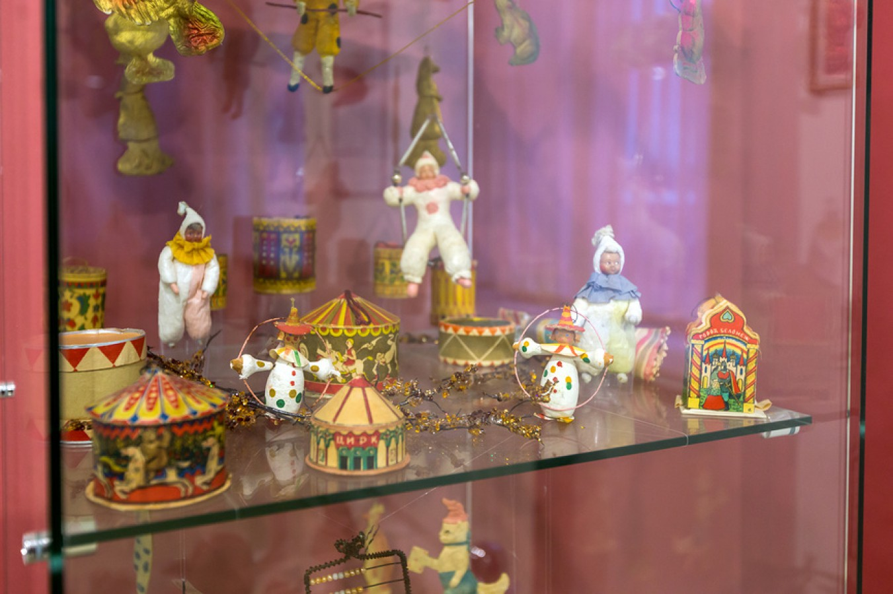
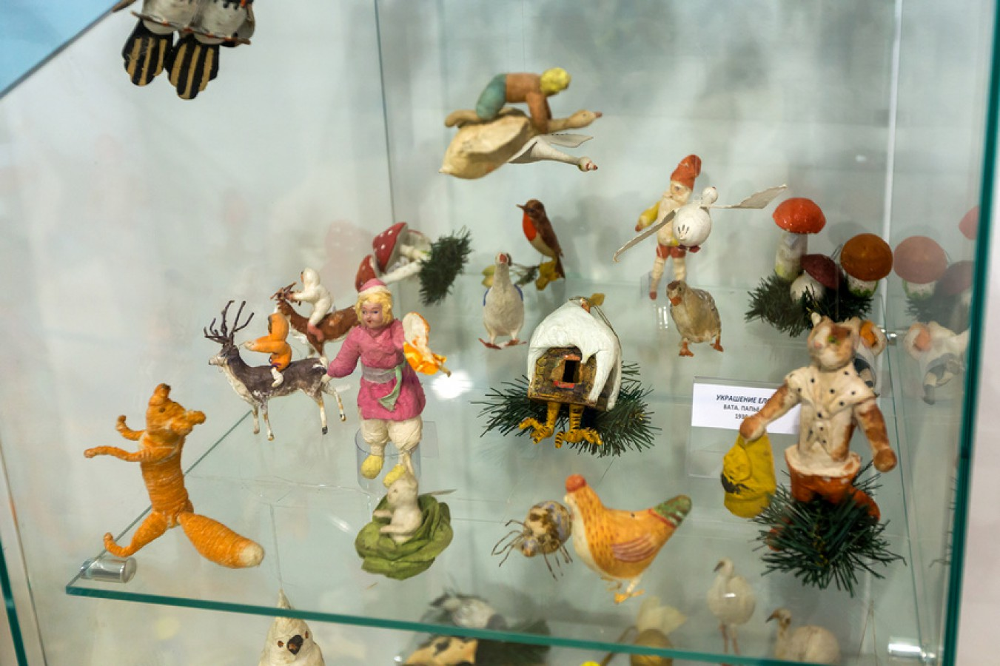
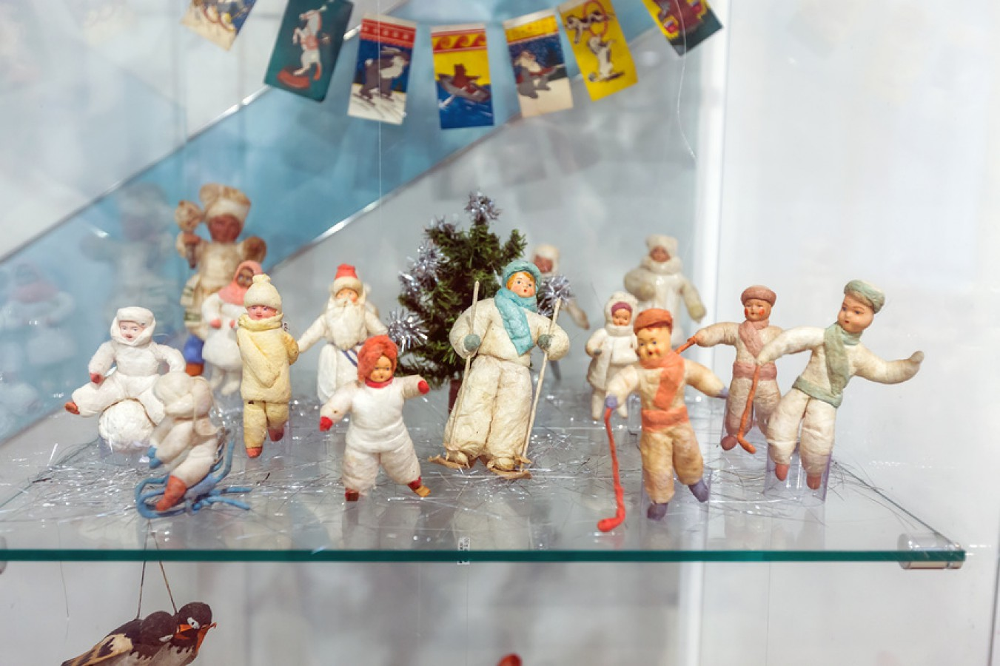

Папье-маше
Большое распространение в Советском Союзе получили украшения из папье-маше (плотного вещества, состоящего из бумажной массы, смешанной с клеем, гипсом или мелом). В СССР производство игрушек из папье-маше было ручным и состояло из ряда длительных операций: лепки, шпатлевки, грунтовки, шлифовки, окраски, росписи с промежуточной сушкой при температуре от 20 до 60°.
Ассортимент в основном составляли реалистичные фигурки людей и животных. Покрытие из бертолетовой соли делало поверхность игрушек более плотной и придавало им неяркий блеск. С помощью вакуумного литья создавались новогодние маски и фигуры больших размеров для елки (деды-морозы и снегурочки). Такие игрушки были легки по весу, но не уступали в прочности прессованным.
  